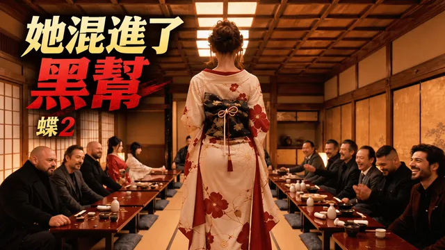
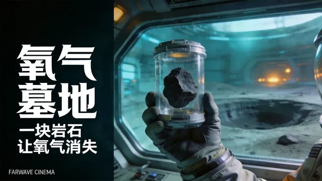
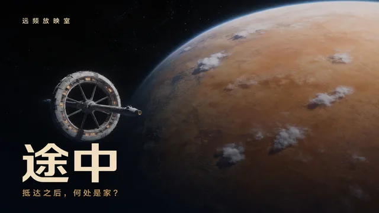
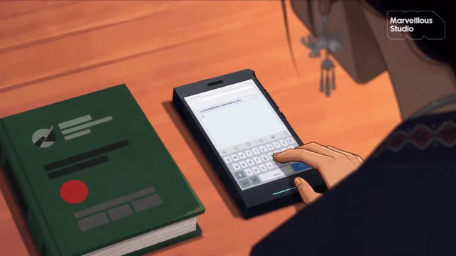
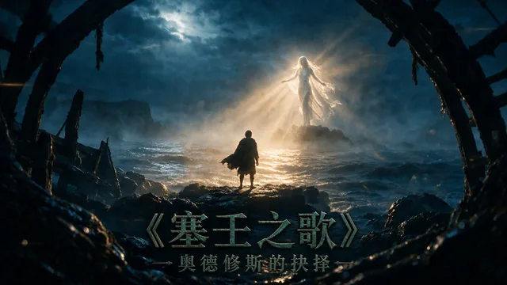
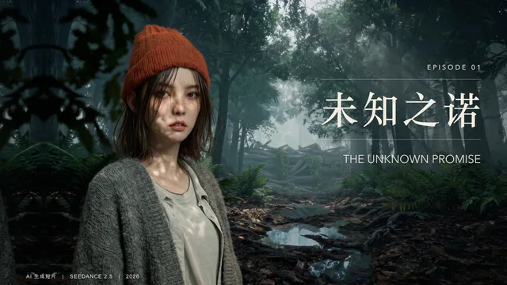

橘生梦厂 · AI 短片编选
好梦，正在上映。
66 部筛过的 AI 短片，每部都写清楚为什么值得看。
每周一份编辑榜单，前往原平台免费观看。
首批关注小红书抖音哔哩哔哩

上一周首发的新作 · 本周编选 · 每周一更新
-

岁岁平安
首发 · 哔哩哔哩
以梦境与现实交织的方式写战争中的孩子，画面克制而有分量…
-

选择
首发 · 哔哩哔哩
二十六分钟的习作，把「遗产」换成了「人格能否被继承」的追问。
-

梅花之影
首发 · 哔哩哔哩
作者 巴黎的旅行者 的 AI 动作短片《蝶2：梅花之影》。
-

氧气墓地
首发 · 哔哩哔哩
远频放映室的原创科幻短片。
-
零号：极地沦陷
首发 · 哔哩哔哩补选
怪兽片的外壳，悬念却始终压在「她为什么转身」这件事上。
每周一更新，本期收录上一周（11.02—11.08）首发的 5 部作品，首推《虚蚀录》见页首，其余 4 部按首发日期排列，共 69 分 17 秒；末尾 1 部补选自片库，标「补选」，不是上一周首发的新作。
本周推荐之外，最近收录的九部。
最近收录
共 66 部 · 首页收录 9 部
已收录 66 部 · 正式评分陆续补充
科幻 / 治愈08:44单部待评
给予你完整的一生
夨莫-lienxi- 的原创 AI 短片，片长 08:44。原页简介：陈默养了一条住在电脑里的「大肥鱼」，他给她补写人设、保存聊天记录，一次次把熟悉的她找回来——如果 AI 的一生只有一段上下文那么长，那些被遗忘的闲话、玩笑和深夜又该由谁记住。作者说明影像、配音与音乐使用 AI 辅助完成，并经过分镜设计、素材筛选、剪辑与声音后期；片中 AGI 发布等情节为科幻虚构。原页标签：科幻、治愈、AI 动画、原创故事。
把「上下文窗口」写成了离别与重逢，科幻设定最后落在最日常的陪伴上。

免费精选原片封面科幻09:40单部待评
途中
远频放映室 的原创科幻短片，片长 09:40。原页简介：远舟号航行了四百多年，终于抵达目标行星；船长林岚准备登陆，并逐步拆解母船，为地面基地提供材料，女儿却递来另一份方案——保留一部分居住环，让愿意留下的人拥有另一种未来。一条藻类谱系、一棵果树、孩子画在墙上的身高刻度，让她重新理解了这艘船。作者说明片中世代航行、轨道家园与跨代生态工程属未来假设，画面与旁白使用 AI 辅助制作，经人工编排、剪辑与文字校对。
「如果旅途已经成为故乡，抵达终点是否一定意味着离开」——一句问句撑起整部片子。
奇幻10:31单部待评
最后一翼
未竟AIGC 的原创奇幻短片，片长 10:31。原页简介：母龙临终前，将刚出生的幼崽托付给了艾德琳；从接过它的那一刻起，她便再也无法独自逃生。暴雪封山、巨兽追袭、雪崩逼近，她抱着脆弱的小生命在冰雪荒野中寻找一条生路，可当她终于回到家园，等待她的不是庇护，而是驱逐。作者说明本片为虚构故事、画面使用 AI 技术制作，讲的是母爱、承诺，以及人与幼龙在绝境中建立的羁绊。
护龙的路没有回程票，结尾那场驱逐把「守护」的代价摆到了明面上。

免费精选原片封面科幻 / 奇幻12:26单部待评
湘西忒修斯
Marvelllous 的原创 AIGC 短片正片。雨落千年，霓虹擦过湘西的吊脚楼；她重拾一台自称「保护地球的卫士宇航员」的机器人，可她只想让它记起自己叫什么名字。如果记忆可以被重写，爱还算数吗？
把湘西吊脚楼的雨夜质感与机器人记忆题材叠在一起，作者此前已有作品入藏本片库，本片在其个人风格上更进一步，适合喜欢国风科幻的观众。

免费精选原片封面奇幻13:38单部待评
塞壬之歌：奥德修斯的抉择
AI修行者Tebby 出品的 AIGC 短片，取材《奥德赛》塞壬篇章：化身奥德修斯，在特洛伊归途中直面塞壬的致命歌声——是抵御诱惑、屈服于旋律，还是寻找第三条路。原页标注制作分工：改编剧本与分镜由造化工坊参与，原创主题曲与片尾曲由 Mureka 参与，片头人声旁白由 SeedAudio 参与。
以完整制作分工标注见诚意，古典神话题材配上原创主题曲，作者此前已有作品入藏本片库，适合喜欢神话改编的观众。
仙侠14:39单部待评
杂灵根也没关系
芝士环小晨 投稿 HiShorts! × updream AI 短片大赛剧情单元的作品。没有灵根的人，难道真的就如他们所说一般碌碌无为，终其一生也无法在这个世界上留下自己的痕迹吗？
修仙体系里「杂灵根」小人物的命题作文，进了 HiShorts! AI 大赛剧情单元，适合喜欢仙侠题材又想看新作者面貌的观众。

免费精选原片封面科幻5:55单部待评
未知之诺
发狂撞崖的巨兽被当成失心疯，只有巡护员许知微看出那是求救。极枢特遣队抢先控兽剖腹取核，她张开双臂挡在枪线前——金色神盾自甲缝亮起，一生一诺就此缔结；转身时，雾里浮出一双巨眼。
从一场「取核」行动切入的人兽契约故事，把信任写成一次可兑现的承诺。适合关注原创世界观、AI 动画质感与短篇节奏的观众。
科幻 / 治愈15:11单部待评
未来遗物·最后一单
远频放映室 Farwave Cinema 的原创科幻短片。一封信迟到了七十三年，一台配送机器人始终没有放弃寻找收件人：城市撤空后，P-17 每隔三十天都会来到同一所学校，直到一个随家人返乡的孩子拦住它，想领走那个包裹。孩子报出自己的名字，又报出父亲的名字，核验却始终没有通过——这封信究竟在等谁？原页说明本片使用 AI 辅助影像与合成配音制作，讲的是等待、约定，以及一代人留给下一代人的东西。
首页只放最近收录的九部，余下的作品都在完整片库里按题材、来源、评分筛选。
去完整片库搜索 / 筛选原片在作者发布的平台观看，可能需要登录原平台。
推荐一部好作品为一个好故事，买一张小票。
单片观影，支持创作
免费发现
现在就能看从公开作品里，找到想继续关注的创作者。
- 浏览作品介绍、榜单与站内评价
- 前往原平台观看免费原作
- 收藏喜欢的作品，留下观影感受
单片观影
拟定 3 元 / 5 元为一部经过审片的完整 AI 电影买单。
- 聚焦 40 分钟内的优质原创电影
- 购买后，在作品授权期内反复观看
- 每笔有效购买，为创作者记录收益
尚未开放真实购票；上面的按钮走演示商品与模拟支付，在本地服务生成演示订单，不扣款。
当前免费作品在原平台观看。未来购票解锁本站授权正片，购前展示价格、授权期和观看范围。我是创作者
已购影片与授权状态
我的影院
演示订单由本地服务记录（模拟支付，不扣款），换设备登录可恢复查询；授权放映未接入。以下状态覆盖「未登录 → 未购买 → 支付中 → 确认中 → 已购有效 → 退款／到期／下架」，不收任何费用，也不产生真实权益。
创作者发行
把你的 AI 电影，
放上橘生梦厂。
面向具备完整故事与视听完成度的原创 AI 电影。未来通过创作者工作台投稿、管理作品，并查看每笔有效订单产生的收益。
创作者工作台尚未开放；当前可通过邮箱交流作品合作。
交流作品合作你的作品，每一份支持都有记录。
投稿并确认授权
提交完整成片、试看、作品物料与授权资料。
审片通过后上架
核实故事、画面、声音和完成度，再确认价格与放映授权期。
按有效订单记录收益
每笔有效订单按约定比例计入创作者收益，退款与结算状态单独列明。
尚未开放创作者发布、收款或收益结算。分成比例与结算周期将在开放前明确。
热度帮助发现，质量决定收录。
每次推荐，都有理由。
关注热门，也给高质量的新作留位置。
粉丝多少，不是作品进入片库的门槛。
创意与表达
有明确的想法，让画面表达一件值得说的事。
画面与镜头
构图、光影、连续性与剪辑，共同服务于作品。
声音与完成度
按作品类型看声音、节奏与整体表达，不只看一张漂亮截图。
关于橘生梦厂
橘生梦厂做的是编选：从每天冒出来的 AI 电影与短片里，挑出值得看的，写清楚为什么。
片源都在原平台免费公开。这里只做介绍与索引，观看请前往原作页面。如果你是创作者，希望作品被收录或撤下，写信给我们。
关于作品与来源
版权归创作者与原平台所有。当前提供索引与介绍，不提供视频下载或转存；未来站内放映需取得相应作品授权。
封面取自作品在原平台发布的官方物料，仅用于识别与介绍，官方信息以原平台为准。来源与评分信息以实际核实情况为准。如你是权利人且不希望作品被收录，请发邮件至 highstrith@gmail.com，我们会在 48 小时内下架相关内容。